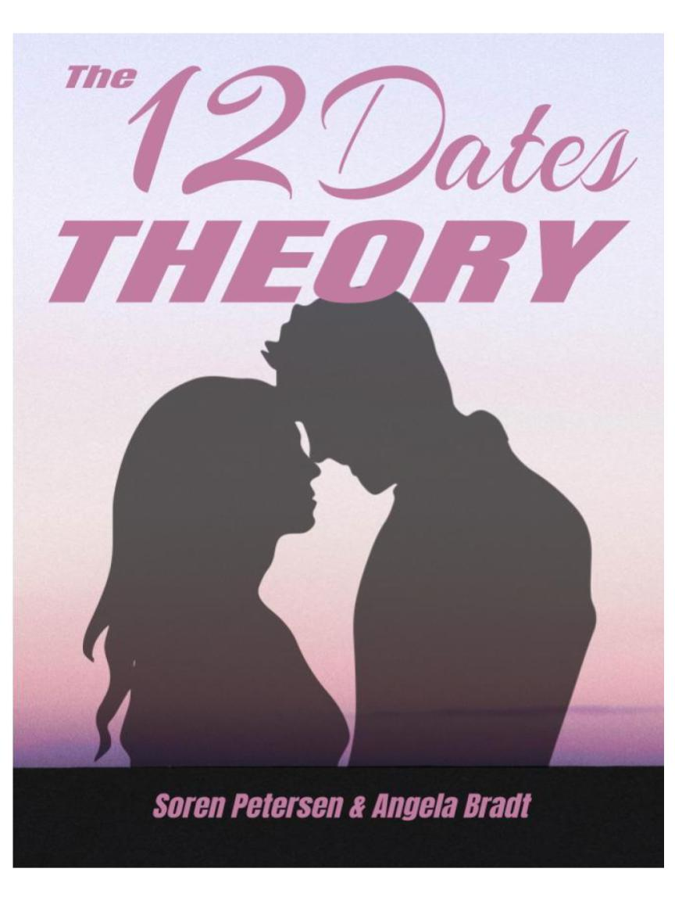

The 12 Dates Theory
The 12 Dates Theory: A Guide to Building Deeper Connections Through Shared Experiences
Can you really get to know someone deeply through just a handful of dates? The 12 Dates Theory says yes—and takes you on a journey through 12 unique, carefully crafted dates designed to explore different dimensions of your relationship. From adventurous outings that reveal true character to quiet moments that test vulnerability, each date presents a distinct situation and purpose to challenge and deepen your connection.
This book provides more than just date ideas—it offers insights into how specific scenarios can reveal new aspects of your partner's personality, communication style, and emotional depth. Whether you're in a new relationship or looking to refresh the bond with a long-term partner, The 12 Dates Theory will help you build a strong foundation based on shared experiences, growth, and understanding.
Are you ready to embark on 12 unforgettable dates that could change the way you see each other?
Read More